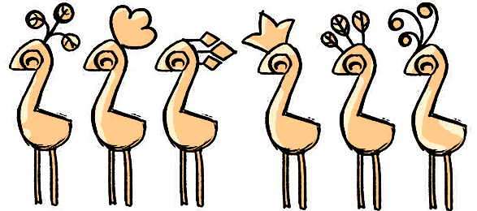
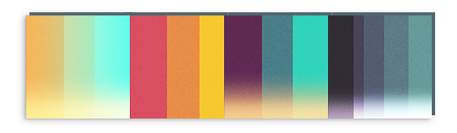

rigging

Experimenting with ways a raindrop could be stylistically animated, this rig was built to be as flexible as possible.
While too overcomplex for a dedicated animator to work with, it allowed me to experiment with options and develop the final look.
Made using Maya and Photoshop.


A personal project that began as an experiment in how a peacock's tail could be rigged, before being visually developed into a complete illustrative scene.
It resulted in a tidy four controls for the billowing, flexing and rotation of all the feathers cohesively, making for streamlined work when animating it.

shaders & vfx
time-of-day lighting
A 4-way ramp overlay shader, for setting up lighting for various times of day, on a per-model basis.

slime creatures
For a 7 day game jam, I designed, modelled, rigged and animated the characters from scratch, and created a suitable refracting slime shader.
Press the "see shader" button to play with some variables.
Press the "see shader" button to play with some variables.
Loading interactive scene. To see this shader demonstrated in a video instead,
click here!
Health indicator shader, for a papery enemy. It fills in an alternative texture and the glitter wings lose their shine as the enemy takes more damage.

Halftone shader that holds scale to camera distance.
tools
One of the fixes I handled on Wayward Strand was updating the prop rig on each each of the 14 characters to a 2-handed prop rig.
After designing the new setup, I wrote up a script for quickly integrating it into each rig alongside some other fixes the rigs needed. Here it's being tested in my debugging toolbox, but it was eventually used in batch across all characters at once.
Scale matching tool, which resizes all selected meshes to match the bounding box size of the first object selected.
skeleton hierarchy checker
On Wayward Strand, while writing the script to batch integrate the new two-handed rig into each of the characters, I found some inconsistencies between all the rigs, such as missing nodes and unoriented bones. This lead me to exporting the hierarchy tree of each character's skeleton and building a spreadsheet tool that checks between any two characters' list of joints for any differences between them.
Each character's rig hierarchy can be compared to any other's. Unique components of their rigs are predefined, and then any inconsistencies and missing joints are automatically highlighted, making it faster to be able to track down problem areas.
The set up also became useful in anticipation of animations needing to be transferred between characters, as it helped to find which couple of characters was the most consistent with as many of the others as possible.
A Maya tool for quickly adding nurbs curves to selected objects. It colours mesh wireframes, joints, locators, curves, camera wireframes, text, and any other shape nodes, also colouring it in the outliner automatically.


Thanks for checking out my portfolio!